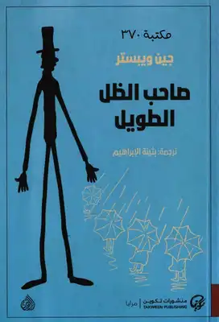

صاحب الظل الطويل

وصف الكتاب
صاحب الظل الطويل أو أبي طويل الساقين، هي رواية للكاتبة الأمريكية جين ويبستر. تدور أحداث القصة حول فتاة يتيمة اسمها جودي أبوت، التي تحصل على منحة للدراسة في مدرسة لينكولن الثانوية من قبل شخص لا تعرفه، اسمه المستعار هو جون سميث وقد ابتكرت له اسم "صاحب الظل الطويل" فهي لم تستطع أن تراه وتشكره، فقط رأت ظله الطويل. المقابل الوحيد الذي اشترطه سميث على جودي مقابل المنحة هو أن تقوم بمراسلته مرة واحدة كل شهر، بدون أن تتوقع رداً منه على رسائلها بالضرورة.
القصة تروي تفاصيل ثلاث سنوات من حياة جودي، ابتداءً من مغادرتها لدار الأيتام وحتى تخرجها من المدرسة الثانوية. وتدور القصة حول شخصيات الرواية الأهم:
جودي أبوت: وهي فتاة ذكية ومرحة توفي والداها عندما كانت طفلة صغيرة ونشأت في دار للأيتام حيث طورت موهبتها في الكتابة، أحد مقالاتها تلفت انتباه جون سميث (صاحب السيقان الطويلة) وتؤدي إلى حصولها منه على منحة إلى مدرسة لينكولن الثانوية حيث تتعرف هناك على صديقتيها سالي ماكبرايد وجوليا بندلتون